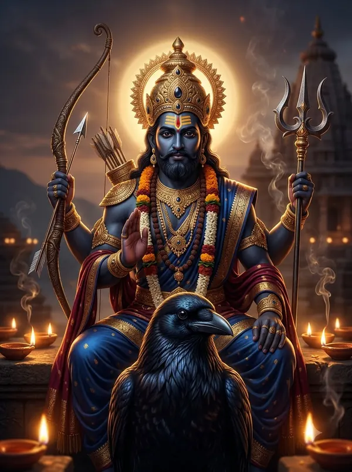

शनि चालीसा — पूरे बोल और अर्थ
‘जयति जयति शनिदेव दयाला’ वाली शनि चालीसा रामसुंदर जी की रचना है। इसमें शनि की दशा से राजा विक्रम, हरिश्चंद्र, नल, पांडवों पर आए कष्ट और शनि के सात वाहनों के फल का वर्णन है।
शनिवार को, साढ़ेसाती या ढैय्या के समय, पीपल पर दीपक जलाकर इसका पाठ किया जाता है।

दोहा
जय गणेश गिरिजा सुवन, मंगल करण कृपाल। दीनन के दुख दूर करि, कीजै नाथ निहाल॥
हे गिरिजा-पुत्र, मंगल करने वाले कृपालु गणेश, आपकी जय हो; दीनों के दुख दूर करके उन्हें निहाल कीजिए।
जय जय श्री शनिदेव प्रभु, सुनहु विनय महाराज। करहु कृपा हे रवि तनय, राखहु जन की लाज॥
हे शनिदेव प्रभु, आपकी जय हो; हे महाराज, विनती सुनिए। हे सूर्यपुत्र, कृपा करके भक्त की लाज रखिए।
चौपाई
जयति जयति शनिदेव दयाला। करत सदा भक्तन प्रतिपाला॥
हे दयालु शनिदेव, आपकी जय हो; आप सदा भक्तों का पालन करते हैं।
चारि भुजा, तनु श्याम विराजै। माथे रतन मुकुट छबि छाजै॥
आपकी चार भुजाएँ हैं, शरीर साँवला है और माथे पर रत्नों का मुकुट शोभा देता है।
परम विशाल मनोहर भाला। टेढ़ी दृष्टि भृकुटि विकराला॥
आपका माथा विशाल और सुंदर है, दृष्टि टेढ़ी और भौंहें विकराल हैं।
कुण्डल श्रवण चमाचम चमके। हिय माल मुक्तन मणि दमके॥
कानों में कुंडल चमकते हैं और छाती पर मोतियों-मणियों की माला दमकती है।
कर में गदा त्रिशूल कुठारा। पल बिच करैं अरिहिं संहारा॥
हाथों में गदा, त्रिशूल और फरसा है; आप पल भर में शत्रुओं का संहार करते हैं।
पिंगल, कृष्णों, छाया नन्दन। यम, कोणस्थ, रौद्र, दुखभंजन॥
पिंगल, कृष्ण, छायानंदन, यम, कोणस्थ, रौद्र, दुखभंजन —
सौरी, मन्द, शनी, दश नामा। भानु पुत्र पूजहिं सब कामा॥
सौरी, मंद और शनि — ये आपके दस नाम हैं; सूर्यपुत्र की पूजा से सब काम बनते हैं।
जा पर प्रभु प्रसन्न ह्वैं जाहीं। रंकहुँ राव करैं क्षण माहीं॥
जिस पर आप प्रसन्न हो जाते हैं, उस गरीब को भी पल भर में राजा बना देते हैं।
पर्वतहू तृण होई निहारत। तृणहू को पर्वत करि डारत॥
आपकी दृष्टि से पर्वत भी तिनका हो जाता है और तिनका भी पर्वत बन जाता है।
राज मिलत बन रामहिं दीन्हयो। कैकेइहुँ की मति हरि लीन्हयो॥
राज्य मिलने के समय श्रीराम को वनवास दिलाया और कैकेयी की बुद्धि फेर दी।
बनहूँ में मृग कपट दिखाई। मातु जानकी गई चुराई॥
वन में कपटी (सोने का) हिरण दिखाया और माता सीता चुरा ली गईं।
लखनहिं शक्ति विकल करिडारा। मचिगा दल में हाहाकारा॥
लक्ष्मण को शक्ति-बाण से व्याकुल कर दिया और (राम की) सेना में हाहाकार मच गया।
रावण की गतिमति बौराई। रामचन्द्र सों बैर बढ़ाई॥
रावण की बुद्धि भ्रष्ट कर दी, जिससे उसने श्रीराम से बैर बढ़ाया।
दियो कीट करि कंचन लंका। बजि बजरंग बीर की डंका॥
सोने की लंका को मिट्टी में मिला दिया और वीर बजरंगबली का डंका बज गया।
नृप विक्रम पर तुहि पगु धारा। चित्र मयूर निगलि गै हारा॥
राजा विक्रमादित्य पर आपकी दशा आई, तो चित्र का मोर (खूँटी पर टँगा) हार निगल गया।
हार नौलखा लाग्यो चोरी। हाथ पैर डरवाय तोरी॥
नौलखा हार की चोरी का आरोप लगा और उनके हाथ-पैर तुड़वा दिए गए।
भारी दशा निकृष्ट दिखायो। तेलिहिं घर कोल्हू चलवायो॥
भारी और बुरी दशा दिखाई और तेली के घर कोल्हू चलवाया।
विनय राग दीपक महं कीन्हयों। तब प्रसन्न प्रभु ह्वै सुख दीन्हयों॥
जब विक्रम ने दीपक राग में आपकी विनती की, तब आप प्रसन्न हुए और सुख दिया।
हरिश्चन्द्र नृप नारि बिकानी। आपहुं भरे डोम घर पानी॥
राजा हरिश्चंद्र की पत्नी बिक गई और वे स्वयं डोम के घर पानी भरने लगे।
तैसे नल पर दशा सिरानी। भूंजी मीन कूद गई पानी॥
वैसे ही राजा नल पर दशा आई, तो भुनी हुई मछली भी पानी में कूद गई।
श्री शंकरहिं गह्यो जब जाई। पारवती को सती कराई॥
जब आपकी दशा शंकर जी पर आई, तो (पूर्वजन्म में) पार्वती को सती होना पड़ा।
तनिक विलोकत ही करि रीसा। नभ उड़ि गयो गौरिसुत सीसा॥
जरा-सा क्रोध से देखते ही गौरी-पुत्र गणेश का सिर आकाश में उड़ गया।
पाण्डव पर भै दशा तुम्हारी। बची द्रौपदी होति उघारी॥
पांडवों पर आपकी दशा आई, तो द्रौपदी निर्वस्त्र होने से (कृष्ण-कृपा से) बचीं।
कौरव के भी गति मति मारयो। युद्ध महाभारत करि डारयो॥
कौरवों की भी बुद्धि मार दी और महाभारत का युद्ध करवा दिया।
रवि कहँ मुख महँ धरि तत्काला। लेकर कूदि परयो पाताला॥
आपने अपने ही पिता सूर्य को तुरंत मुँह में रख लिया और पाताल में कूद गए।
शेष देव लखि विनती लाई। रवि को मुख ते दियो छुड़ाई॥
यह देखकर देवताओं ने विनती की, तब आपने सूर्य को मुँह से छोड़ दिया।
वाहन प्रभु के सात सजाना। जग दिग्गज गर्दभ मृग स्वाना॥
प्रभु के सात वाहन हैं — हाथी, गधा, हिरण, कुत्ता,
जम्बुक सिंह आदि नख धारी। सो फल ज्योतिष कहत पुकारी॥
सियार, सिंह आदि; ज्योतिष इनका अलग-अलग फल पुकारकर बताता है।
गज वाहन लक्ष्मी गृह आवैं। हय ते सुख सम्पति उपजावैं॥
हाथी पर आने से घर में लक्ष्मी आती है, घोड़े पर आने से सुख-संपत्ति बढ़ती है।
गर्दभ हानि करै बहु काजा। सिंह सिद्धकर राज समाजा॥
गधे पर आने से कामों में हानि होती है, सिंह पर आने से राज-समाज में सफलता मिलती है।
जम्बुक बुद्धि नष्ट कर डारै। मृग दे कष्ट प्राण संहारै॥
सियार पर आने से बुद्धि नष्ट होती है, हिरण पर आने से प्राणों तक का कष्ट होता है।
जब आवहिं प्रभु स्वान सवारी। चोरी आदि होय डर भारी॥
जब प्रभु कुत्ते की सवारी पर आते हैं, तब चोरी आदि का भारी डर होता है।
तैसहि चारि चरण यह नामा। स्वर्ण लौह चाँदी अरु तामा॥
इसी तरह आपके चार चरण (पाद) हैं — सोना, लोहा, चाँदी और ताँबा।
लौह चरण पर जब प्रभु आवैं। धन जन सम्पत्ति नष्ट करावैं॥
जब प्रभु लोहे के चरण से आते हैं, तब धन, परिवार और संपत्ति की हानि कराते हैं।
समता ताम्र रजत शुभकारी। स्वर्ण सर्व सुख मंगल भारी॥
ताँबा और चाँदी बराबर शुभ हैं, और सोने का चरण सब सुख और भारी मंगल देता है।
जो यह शनि चरित्र नित गावै। कबहुं न दशा निकृष्ट सतावै॥
जो रोज़ शनि का यह चरित्र गाता है, उसे बुरी दशा कभी नहीं सताती।
अद्भुत नाथ दिखावैं लीला। करैं शत्रु के नशि बलि ढीला॥
नाथ अद्भुत लीला दिखाते हैं और शत्रुओं का बल ढीला कर देते हैं।
जो पण्डित सुयोग्य बुलवाई। विधिवत शनि ग्रह शांति कराई॥
जो योग्य पंडित बुलाकर विधि से शनि ग्रह की शांति करवाता है,
पीपल जल शनि दिवस चढ़ावत। दीप दान दै बहु सुख पावत॥
और शनिवार को पीपल पर जल चढ़ाकर दीपदान करता है, वह बहुत सुख पाता है।
कहत राम सुन्दर प्रभु दासा। शनि सुमिरत सुख होत प्रकाशा॥
प्रभु के दास रामसुंदर कहते हैं — शनि का स्मरण करने से सुख का प्रकाश होता है।
दोहा
पाठ शनिश्चर देव को, की हों भक्त तैयार। करत पाठ चालीस दिन, हो भवसागर पार॥
भक्तों के लिए तैयार किया गया शनिदेव का यह पाठ जो चालीस दिन करता है, वह संसार-सागर से पार हो जाता है।
शनि चालीसा का पाठ पूरा हुआ।
किसी अपने को WhatsApp पर भेजेंपाठ पारंपरिक है और अलग-अलग क्षेत्रों में शब्दों में थोड़ा अंतर मिलता है। अर्थ सरल हिंदी में OmKiran Bhakti ने लिखा है। कोई त्रुटि दिखे तो YouTube पर कमेंट करके बताएँ।